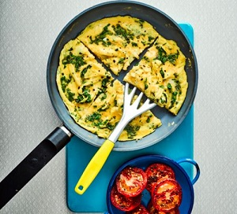
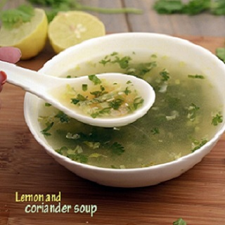
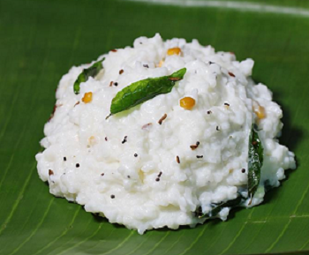
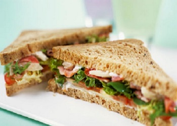
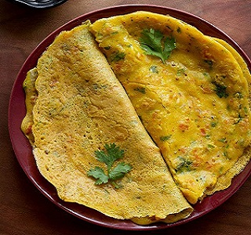
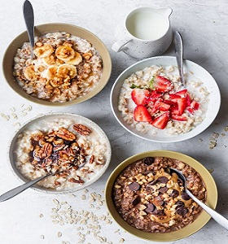
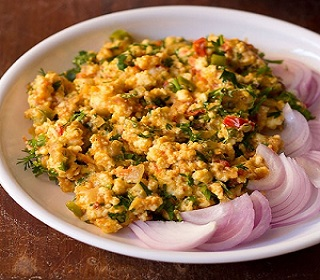

1. HERB OMELETTE WITH FRIED TOMATOES
Calories=200, Protein= 17g, Fat = 13g, Gluten free
METHOD:
- Heat oil in the pan, cook the round cut tomatoes.
- When they start to get soft, scoop them into the plate.
- Beat 4 eggs with salt and herbs like parsley and corrainder and pour it into the pan.
- When its nearly cooked place it over the tomatoes and your dish is ready.
2. LEMON CORIANDER SOUP
Rich in Vitamin C, healthy, Good for Weight Loss
METHOD:
- In a pan take 2 tsp oil, 2 garlic (finely chopped), ginger (1 inch) and then sauté them well.
- Add onion, coriander stem 2tsp, again sauté them.
- Now add vegetables like chopped carrots, cabbage, beans, etc, about 2 tsp each (you may add corn if you have about 2tsp), sauté them till 1 min.
- Add 2 cups of water, 1/2 tsp salt and 1 tsp pepper, mix them well, boil for 5 mins.
- Take 1 tsp corn flour in 1/4 cup of water and mix until no lumps are left, now add it to the pan.
- Boil for 2 mins and them add 3 tsp of lemon juice and 2 tsp of coriander and your soup is ready.
3. DADDOJANAM
Very Light for Summers, Good for Stomach and Boosts Digestion
METHOD:
- Take 1/2 cup of rice (rinsed) in a pressure cooker with 1.5 cup of water and cook it till 5 whistles.
- Mash the hot cooked rice a bit and mic with 1/2 cup of milk, let it rest for 10 mins.
- Add 1 cup of curd.
- In a smallbowl add 2 tsp of oil and heat it, now add mustard, cumin, urad dal and chana dal (all 1 tsp). Add a pinch of hing, pepper( 1/2 tsp)and few curry leaves, temper it and add to the mixture and your dish is ready.
4. BREAKFAST SANDWICH
Calories=275, Healthy, Good for Weight Loss
METHOD:
- Take 1 tsp of oil in a pan, add cumin and then onion, chopped 1/2 cup of carrot (u may add cabbage ).
- Break 1 egg into it, now add salt and pepper and mix it well, now add coriander leaves.
- Now take 2 brown breads (or the ones available), place few already cut tomato and cucumber pieces and then place your mixture between the two breads and your sandwich is ready.
5. BESAN CHEELA
Calories=230, easy to make
METHOD:
- Take 1/2 cup of besan, add chopped vegetables like onion, capsicum, green chillies, coriander.
- Now add salt, pepper, turmeric, red chilli powder, ajwain and warm water, mix it very well to form a paste (though having rough texture).
- Take a pan and put 1 tsp oil, now lay the paste onto the pan as an omelette and cook it from both the sides, once done you can have it with chapatti or directly with mint chutney.
6. OAT MEAL
Calories=68, Very Good for Weight Loss
METHOD:
- Take a pan and take oats in it as per requirement and add water, also add sugar according to taste (you can also add chia seeds).
- Let it boil a bit then put it into a bowl and add fresh fruits like banana, apple, etc, you may also add few dry fruits and have this whole bowl as your breakfast.
7. EGG PANEER VEGGIES
It has both protein and veggies and is very good for weight loss.
METHOD:
- Pan fry chopped paneer and place it in a plate.
- Now in a pan take few green vegetables and tomatoes, add some pepper and salt and let it cook a bit (remember don’t overcook it as we want all the proteins in our dish) .
- Now in a plate mix these veggies with the paneer and have it with 2 boil eggs daily.
8. UPMA

Rich in Protein, Vitamin B and Iron
METHOD:
- Take a pan and add 1 tsp of ghee and 1/4 cup of chane ki dal, now sauté it a bit
- Now add pinch of rai and 5-6 cashews, now fry it a bit and then add curry leaves and chopped onions and cook it for 2 mins, now transfer all of this in a bowl.
- Now in the pan, add suji (semolina)(very rich in iron ), roast it, just before it changes its color transfer it into a bowl.
- Now again add the earlier mixture into the pan, add green chillies, salt, pepper and water about 1.5 cup.
- When water starts to boil a bit then add the roasted suji slowly and mix it.
- Now transfer it into a bowl and put some coriander and your dish is ready.